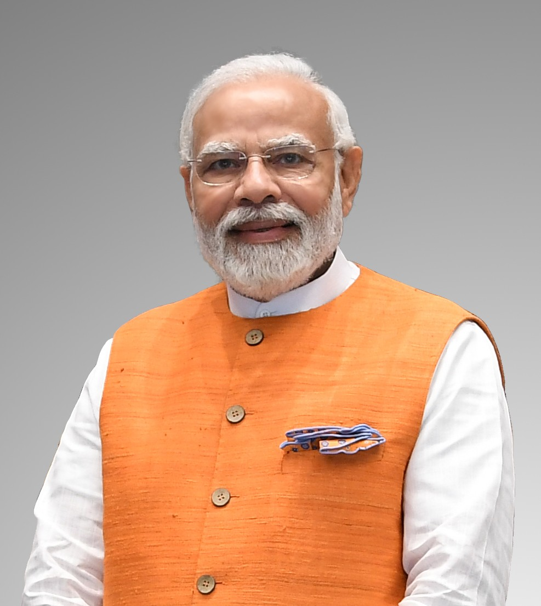
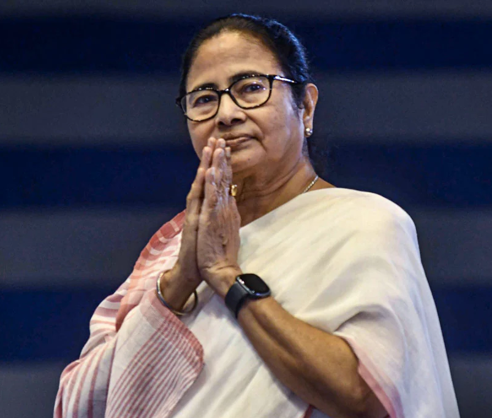

Narendra Modi
Prime Minister of India, BJP
- Born: Sept 17, 1950
- Education: Delhi University
- Party: BJP
- Position: PM since 2014
- Key Focus: Economic reforms & infrastructure development
- Major Schemes: Swachh Bharat, Make in India
- Leadership Style: Strong central governance
- International Role: Strengthened India’s global diplomacy

Rahul Gandhi
Leader, Indian National Congress
- Born: June 19, 1970
- Education: Cambridge
- Party: INC
- MP: Since 2004
- Key Focus: Social justice & employment
- Major Interests: Education reform & youth empowerment
- Leadership Style: Democratic and consultative
- Public Outreach: Regular interaction with students, farmers, and workers

Arvind Kejriwal
Chief Minister of Delhi, AAP
- Born: Aug 16, 1968
- Education: IIT Kharagpur
- Party: AAP
- CM: Delhi
- Key Focus: Transparent governance
- Major Reforms: Subsidized electricity and water supply for households
- Leadership Style: People-centric administration
- Public Impact: Reduced cost of living for middle- and lower-income families

Mamata Banerjee
Chief Minister of West Bengal, TMC
- Born: Jan 5, 1955
- Education: Calcutta University
- Party: TMC
- CM: Since 2011
- Key Focus: Grassroots development
- Major Scheme: Duare Sarkar – doorstep delivery of government services
- Leadership Style: Grassroots-oriented leadership
- Public Impact: Improved access to welfare schemes for rural and urban citizens